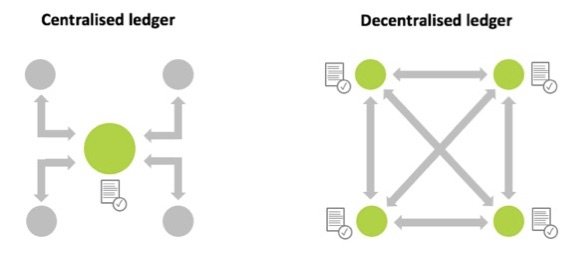

Frequently Asked Questions
Benefits
Log files reconciliation requires log file data provided by various individual supply chain participants to be consistent. One way to address this question is to define detailed standards for log file formats, data fields naming conventions, taxonomies and meanings. To come to an agreement on industry logging standards is likely to take time and will require significant investments from adtech vendors to adjust their logging systems.
Another approach is to write log files data to the DLT network, where it is automatically harmonised to a common network format at the moment it is written. This approach requires less investments from ad-tech vendors, as it allows to use any formats, taxonomies and naming conventions as long as they can be harmonised to a common format. The only standard required to avoid any ambiguity is to define the meaning of data fields. With this approach the log files reconciliation functionality may be supported by the industry much faster with minimal changes required from ad-tech vendors.
In general, CV Tools provide Ad Effectiveness impression data, blocking and pre-bid tools. They do not address Cost Efficiency (supply chain costs) or Ad Delivery/reconciliation questions. Specifically, here are the additional benefits of using TAG TrustNet:
- Confirming what site and application your ads actually appeared on. Matched log-level data from the DSP, SSP, ad server and CV company are used to confirm the domain that was recorded for an impression from each platform. If there are differences this can help identify technical problems, misplacement, and domain spoofing.
- Matching cost data from the DSP and SSP means you can analyse standard verification metrics using dollars or pounds leading to better decisions.
- TrustNet brings together adherence to industry standards (ads.txt and sellers.json) and certification (TAG) in a single place to improve brand safety, and reduce fraud, malware and piracy.
Compliance
TAG TrustNet does not allow its members to process Personal Data or otherwise link data within the TAG TrustNet with other data held by a participant to create Personal Data. Every TAG TrustNet member shall comply with TAG TrustNet Member Requirements, which state that log-level data provided for ingestion into TAG TrustNet shall not include any Personal Data and, as such, should fall outside of the scope of data protection laws, including, without limitation, the GDPR and the CCPA. All Personal Data, and any data fields which represent “pseudonymous data,” shall be removed before the underlying dataset is ingested into TAG TrustNet.
- “Personal Data” means any information defined as “personal data,” “personal information,” “personally identifiable information,” or other similar term under applicable data protection laws.
While impression timestamps and oRTB Bid Request Impression IDs that are ingested into TAG TrustNet might be considered “pseudonymous data” in some circumstances, it is “anonymous data” in this case because:
– It is not possible for Fiducia, as a platform provider for TAG TrustNet, to use this data to identify an individual and;
– TAG TrustNet obfuscates these data fields when they are exported to reasonably prevent anyone from linking TAG TrustNet impression records to an individual (see below for more details).
In addition to the above, Fiducia, as a platform provider, takes the following steps to reduce risks of re-identifiability of data ingested by, or exported from, TAG TrustNet, so as to achieve the standards of anonymization under applicable data protection laws (such as by not allowing re-identification via the “means reasonably likely to be used” by a third party, per the GDPR standard for determining whether data is “identifiable”):
– For all supported data sources, the TAG TrustNet Node Data Connectors filter any data fields that represent Personal Data from processing in the TAG TrustNet. Only data fields outlined in TAG TrustNet Member Requirements are ingested to by TAG TrustNet for processing.
– When data is exported by TAG TrustNet Members to external databases, the TAG TrustNet Node obfuscates oRTB Bid Request Impression ID, oRTB Bid Request ID, and Timestamp data fields as follows. oRTB Bid Request Impression IDs and oRTB Bid Request IDs are replaced with anonymous impression IDs, which cannot be linked back to original oRTB Bid Request Impression IDs or oRTB Bid Request IDs. Timestamps are rounded to 1-hour intervals.
General Information
It is a type of database which stores transaction records and is consensually shared, synchronized and accessible across multiple organisations, sites, institutions, or geographies. A distributed ledger stands in contrast to a centralized database, which is more prone to failures, cyber-attacks and fraud, as it is administered by a single organisation and therefore has a single point of failure.

The TAG DLT network is permissioned, as opposed to unpermissioned networks like Bitcoin that are open to anyone. It is pemissioned in three ways, (a) the participants need to agree to the governance and control principles to participate to the network, (b) the participants need to be approved to become network members, (c) the participants need to comply with the network minimum requirements at all times.

Governance
Membership
The following is the process for a Supply Chain Participants (such as ad servers, CVs, DSPs, and Exchanges/SSPs) to join the network:
- Agree to the network requirements and sign the TAG TrustNet Membership Agreement
- Get verified as a legitimate legal entity and get a network ID
- Sign the TAG TrustNet Licensing & Service Level Agreement
- Complete the Node and Data Assessment Form
- Get a Data Connector built and approved
- Get a Network Node set-up allowing to import and share data with other network members
- Set up ongoing data feed(s) based on Advertiser requests